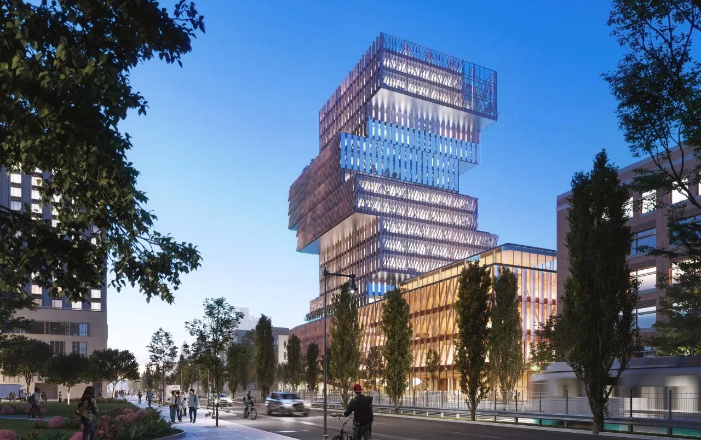

<!DOCTYPE html>
<html>

<head>
    <title>Architecture Survey</title>
    <meta http-equiv="pragma" content="no-cache">
    <link rel="icon" href="data:;base64,iVBORw0KGgo=">
    <!-- <link href="https://unpkg.com/jspsych@7.3.1/css/jspsych.css" rel="stylesheet" type="text/css" /> -->
    <link href="jspsych/jspsych.css" rel="stylesheet" type="text/css" />
    <!-- <script src="https://unpkg.com/jspsych@7.3.1"></script> -->
    <script src="jspsych/jspsych.js"></script>
    <!-- <script src="https://unpkg.com/@jspsych/plugin-preload@1.1.2"></script> -->
    <script src="jspsych/plugin-preload.js"></script>
    <!-- <script src="https://unpkg.com/@jspsych/plugin-html-keyboard-response@1.1.2"></script> -->
    <script src="jspsych/plugin-html-keyboard-response.js"></script>
    <!-- <script src="https://unpkg.com/@jspsych/plugin-html-button-response@1.1.2"></script> -->
    <script src="jspsych/plugin-html-button-response.js"></script>
    <!-- <script src="https://unpkg.com/@jspsych/plugin-image-keyboard-response@1.1.2"></script> -->
    <!-- <script src="https://unpkg.com/@jspsych/plugin-image-button-response@1.1.2"></script> -->
    <!-- <script src="https://unpkg.com/@jspsych/plugin-categorize-image@1.1.2"></script> -->
    <script src="jspsych/plugin-categorize-image.js"></script>
    <!-- <script src="https://unpkg.com/@jspsych/plugin-fullscreen@1.2.0"></script> -->
    <script src="jspsych/plugin-fullscreen.js"></script>
    <!-- <script src="https://unpkg.com/@jspsych/plugin-html-slider-response@1.1.2"></script>  -->
    <script src="jspsych/plugin-html-slider-response.js"></script> 
    <!-- <script src="https://unpkg.com/@jspsych/plugin-survey-likert@1.1.2"></script> -->
    <script src="jspsych/plugin-survey-likert.js"></script>
    <!-- <script src="https://unpkg.com/@jspsych/plugin-survey-html-form@1.0.2"></script> -->
    <script src="jspsych/plugin-survey-html-form.js"></script>
    <script src="jspsych/plugin-survey-multi-select.js"></script>
    <script src='https://ajax.googleapis.com/ajax/libs/jquery/2.2.4/jquery.min.js'></script>
    <script src="util.js"></script>
</head>

<body></body>

<script>
    // Initialize the jsPsych object (possibly with arguments: https://www.jspsych.org/7.3/reference/jspsych/)
    var jsPsych = initJsPsych({
        on_finish: function () {
            //jsPsych.data.displayData(); // Print data to screen at the end
            write_data_to_server(); // This function is defined in `util.js`
        },
        show_progress_bar: true,
    });

    // The `write_data_to_server` function requires two global variables to be defined:
    // `url_write_data_php` (web location of the write_data.php script) and `output_filename`
    var url_experiment_dir = 'https://kxzheng.scripts.mit.edu/architecture-survey/'; // CHANGE
    var url_write_data_php = url_experiment_dir + 'write_data.php';

    // randomize subject id
    var subject_id = jsPsych.data.getURLVariable('subject_id');
    console.log(`subject_id from URL: ${subject_id}`);
    if (!subject_id) {
        subject_id = jsPsych.randomization.randomID(10);
        console.log(`subject_id randomly assigned: ${subject_id}`);
    }

    // save output file
    var output_filename = `data/experiment3_${subject_id}.json`;
    // console.log(`Data will be saved to: ${url_experiment_dir + output_filename}`);

    // Initialize a timeline (just an empty array)
    var timeline = [];

    // A preload object will ensure images are loaded from the server before the trial they are used
    var preload = {
        type: jsPsychPreload,
        auto_preload: true,
    };
    timeline.push(preload);

    // Always good to put experiment instructions /  disclaimers on the first page
    var first_page = {
        type: jsPsychHtmlButtonResponse, // This trial will use the "html-button-response" plugin
        stimulus: [
        '<h2>Architecture Preference Survey</h2>' +
            '<p>In this survey, we hope to learn more about your architectural preferences. Your task is to compare different structures and/or make choices about them. Feel free to reach out to learn more about our project! <b>At the end of this survey, you can write your kerb/email to enter the sandwich raffle.</b> </p>' +
            '<p>Contacts: kxzheng@mit.edu, iyu@mit.edu </p>' +
            '<figure><figcaption><small>BU Computer Science Department\'s unique architecture.<\small></figcaption></figure>' 
            
        ],
        choices: ['Begin'],
    };

    var enter_fullscreen = {
        type: jsPsychFullscreen,
        fullscreen_mode: true,
        message: '<p>This survey will switch to full screen mode when you press the button below.</p>'
    }

    timeline.push(first_page,enter_fullscreen);

    var attention_trial = {
        type: jsPsychHtmlButtonResponse, // This trial will use the "html-button-response" plugin
        stimulus: [
            '<p>Please repeat the instructions.</p>'
        ],
        choices: ['Continue'],
    }

    ////
    var t = [
        `videos/t_towers/0_0.mp4`,
        `videos/t_towers/1_0.mp4`,
        `videos/t_towers/2_0.mp4`,
        `videos/t_towers/3_0.mp4`,
        `videos/t_towers/4_0.mp4`,
        `videos/t_towers/5_0.mp4`
    ] //string of sorted by height
    var h5 = [
        `videos/5_tall/5_0.mp4`,
        `videos/5_tall/0.251875_4_1693092812.6565719.mp4`,
        `videos/5_tall/0.51_6_1693093115.2289646.mp4`,
        `videos/5_tall/0.584375_1_1693092890.8446198.mp4`,
        `videos/5_tall/0.73125_1_1693093162.5186362.mp4`
    ] //string of sorted by stability
    var h8 = [
        `videos/8_tall/8_0.mp4`,
        `videos/8_tall/0.4714285714285714_3_1693094475.5026772.mp4`,
        `videos/8_tall/0.5039285714285714_1_1693094729.2312584.mp4`,
        `videos/8_tall/0.7585714285714285_6_1693094665.55217.mp4`,
        `videos/8_tall/0.9428571428571428_7_1693094736.4615016.mp4`
    ]
    var h10 = [
        `videos/10_tall/10_0.mp4`,
        `videos/10_tall/0.5013888888888888_6_1693100678.0054057.mp4`,
        `videos/10_tall/0.8277777777777778_8_1693100262.8454077.mp4`,
        `videos/10_tall/0.8277777777777778_8_1693100262.8454077.mp4`,
        `videos/10_tall/0.9833333333333334_4_1693100566.4094222.mp4`
    ]

    var groupings = {
        1: [[t[4], t[0]], [t[2],t[3]],[h10[4], h10[2]], [h10[2], h10[3]], [h5[2], h5[1]], [h8[0], h8[4]], 
                    [h5[1], h8[2]], [h5[0], h10[2]], [h10[2], h5[3]], [h8[0], h10[1]]],
            // {T_tower: [[t[4], t[0]], [t[2],t[3]]], //indices 
            // same_height: [[h10[4], h10[2]], [h10[2], h10[3]], [h5[2], h5[1]], [h8[0], h8[4]]],
            // diff_height: [[h5[1], h8[2]], [h5[0], h10[2]], [h10[2], h5[3]], [h8[0], h10[1]]]
            //}, 
        2:[[t[5], t[2]], [t[3], t[1]], [h5[4], h5[0]], [h8[3], h8[2]], [h10[1], h10[3]],[h5[3], h5[4]],
                    [h10[3], h8[0]], [h8[4], h5[3]], [h8[4], h10[1]], [h5[4], h10[2]]],
            //{T_tower: [[t[5], t[2]], [t[3], t[1]]],
            // same_height: [[h5[4], h5[0]], [h8[3], h8[2]], [h10[1], h10[3]],[h5[3], h5[4]]],
            // diff_height: [[h10[3], h8[0]], [h8[4], h5[3]], [h8[4], h10[1]], [h5[4], h10[2]]]

            // }, 
        3: [[t[4], t[5]], [t[4], t[3]], [h10[3], h10[0]], [h8[2], h8[3]], [h5[4], h5[2], [h8[0], h8[1]]], 
                    [h5[3], h8[1]], [h10[4], h5[0]], [h8[2], h5[0]], [h10[2], h8[3]]]
            //{T_tower: [[t[4], t[5]], [t[4], t[3]]],
            // same_height: [[h10[3], h10[0]], [h8[2], h8[3]], [h5[4], h5[2], [h8[0], h8[1]]]],
            // diff_height: [[h5[3], h8[1]], [h10[4], h5[0]], [h8[2], h5[0]], [h10[2], h8[3]]]}
        };


    // console.log(groupings[1]);

    /// question about materials 

    var mat_page = {
        type: jsPsychHtmlButtonResponse, // This trial will use the "html-button-response" plugin
        stimulus: [
            '<h2>Stage 1) Construction material</h2>' +
            '<p>Initially, carefully observe each structure and make a selection among wood, metal, glass, brick, and concrete as the optimal construction material for ensuring longevity. </p>' 
        ],
        choices: ['Continue'],
    };
    timeline.push(mat_page);

    function make_mat_trial(mat_path){
        // var material_trial = {
        //     type: jsPsychHtmlButtonResponse,
        //     stimulus: `
        //                 <p>Play the video: What material should this building be made from for most longevity?</p> 
        //                 <video id="videoleft" width="500" controls="controls" preload="none" disablepictureinpicture controlsList="nofullscreen nodownload noremoteplayback noplaybackrate"> 
        //                     <source type="video/mp4" src="${mat_path}"  /> 
        //                 </video>`,
        //     choices: ['Wood', 'Metal', 'Glass', 'Brick', 'Concrete'],
        //     prompt: "",
        //     data: {
        //         stimulus_video: mat_path,
        // }};

        var material_trial = {
            type: jsPsychHtmlSliderResponse,
            stimulus: `
                        <p>Play the video showing: What material should this building be made from for most longevity? Note: the camera rotates to show all angles of the stationary building. </p> 
                        <video autoplay id="videoleft" width="500" height = "500" controls="controls" preload="none" disablepictureinpicture controlsList="nofullscreen nodownload noremoteplayback noplaybackrate"> 
                            <source type="video/mp4" src="${mat_path}"  /> 
                        </video>`,
            max: 40,
            slider_start: 20,
            step: 10,
            require_movement: true,
            labels: ['Wood', 'Metal', 'Glass', 'Brick', 'Concrete'],
            data: {
                stimulus_video: mat_path,
        }};

        return material_trial}
    
    var mat_trial_order = jsPsych.randomization.shuffle([make_mat_trial(t[5]), 
            make_mat_trial(h8[3]), 
            make_mat_trial(h10[2])]);
    
    timeline.push.apply(timeline, mat_trial_order)
    // console.log(mat_trial_order)

    var attention_check = {
        type: jsPsychSurveyMultiSelect,
        questions: [
        {
        prompt: "To confirm your understanding, which of the following is true about this survey? (2 correct answers)", 
        // name: 'VegetablesLike', 
        options: ['The buildings rotate.','The buildings do not rotate.', 'Concrete was a choice in the previous question.', 'Marble was a choice in the previous question.'], 
        required: true,
        // horizontal: true
        }]
    }
    timeline.push(attention_check);


    ///// questions about stability, cost, and aesthetics 
    var comparison_questions = {stability:`<p>Play the following videos: which building is more likely to collapse during an earthquake? Note: the camera rotates to show all angles of the stationary buildings.</p>
                                <p><small>Select 1 if the left building is more likely to collapse, 
                                2-6 for in between, and 7 if the right building is more likely to collapse. </small></p>`,
                                expense: `<p>Play the following videos: which building seems more expensive cost wise to construct? Note: the camera rotates to show all angles of the stationary buildings.</p>
                                <p><small>Select 1 if the left building seems more expensive,
                                2-6 for in between, and 7 if the right building seems more expensive. </small></p>`,
                                aesthetics: `<p>Play the following videos: which building's appearance do you prefer aesthetically? Note: the camera rotates to show all angles of the stationary buildings.</p>
                                <p><small>Select 1 if the left building is more aesthetic, 
                                2-6 for in between, and 7 if the right building is more aesthetic. </small></p>`
                                };
    
    // var left_video_path = t[0];//`videos/t_tower/t_towers0.mp4`;
    // var right_video_path = h10[3];//`videos/t_tower/t_towers3.mp4`;
    // console.log(groupings[group_no])

    // function trial_pair(group) {
    function make_comp_trial(comp_question, left_path, right_path, group_n){
        var comparison_trial = {
            type: jsPsychHtmlSliderResponse,
            stimulus: `${comp_question}` + // alterate this question line
                        `<div id="wrapper"> 
                        <video autoplay id="videoleft" width="400" height="400" controls="controls" preload="none" disablepictureinpicture controlsList="nofullscreen nodownload noremoteplayback noplaybackrate"> 
                            <source type="video/mp4" src="${left_path}" /> 
                        </video>
                        <video autoplay id="videoright" width="400" height="400" controls="controls" preload="none" disablepictureinpicture controlsList="nofullscreen nodownload noremoteplayback noplaybackrate"> 
                            <source type="video/mp4" src="${right_path}" /> 
                        </video>
                        <div class="clear"></div> 
                    </div>`,
            max: 60,
            slider_start: 30,
            step: 1,
            require_movement: true,
            labels: ['1 (Left)','2','3','4','5','6','7 (Right)'],
            data: {
                    grouping_no: group_n,
                    stimulus_left_video: left_path,
                    stimulus_right_video: right_path,
            }
            };
        return comparison_trial};

    // make array for each type of comp question 
    var stability_trials = []
    var expense_trials = []
    var aesthetics_trials = []

    var group_no = jsPsych.randomization.sampleWithoutReplacement([1,2,3],1)[0];
    var pairs = groupings[group_no];
    console.log(`group no randomly assigned: ${group_no}`);
    // console.log(make_comp_trial(comparison_questions.stability, pairs[0][0], pairs[0][1],group_no))

    for (var itr_trial = 0; itr_trial < pairs.length; itr_trial += 1) {   
        stability_trials.push(make_comp_trial(comparison_questions.stability, pairs[itr_trial][0], pairs[itr_trial][1],group_no));
        expense_trials.push(make_comp_trial(comparison_questions.expense, pairs[itr_trial][0], pairs[itr_trial][1],group_no));
        aesthetics_trials.push(make_comp_trial(comparison_questions.aesthetics, pairs[itr_trial][0], pairs[itr_trial][1],group_no));
    };

    var stability_trial_order = jsPsych.randomization.shuffle([stability_trials]);
    var expense_trial_order = jsPsych.randomization.shuffle([expense_trials]);
    var aesthetics_trial_order = jsPsych.randomization.shuffle([aesthetics_trials]);
    // console.log(stability_trial_order[0])
    // timeline.push(stability_trial_order[0])

    ///
    var stability_page = {
        type: jsPsychHtmlButtonResponse, // This trial will use the "html-button-response" plugin
        stimulus: [
            '<h2>Stage 2) Possibility of collapsing</h2>' +
            '<p>Compare the two structures and select 1 if the left building is more likely to collapse, 2-6 for in between, </p>'+
            '<p>and 7 if the right building is more likely to collapse. Note that all blocks are the same size. </p>' 
        ],
        choices: ['Continue'],
    };
    timeline.push(stability_page);
    timeline.push.apply(timeline, stability_trial_order[0]);

    ///
    var expense_page = {
        type: jsPsychHtmlButtonResponse, // This trial will use the "html-button-response" plugin
        stimulus: [
            '<h2>Stage 3) Building expense</h2>' +
            '<p>Compare the two structures and select 1 if the left building is more expensive to build, 2-6 for in between, </p>'+
            '<p>and 7 if the right building is more expensive to build. Note that all blocks are the same size. </p>' 
        ],
        choices: ['Continue'],
    };
    timeline.push(expense_page);
    timeline.push.apply(timeline, expense_trial_order[0]);

    ///
    var aesthetics_page = {
        type: jsPsychHtmlButtonResponse, // This trial will use the "html-button-response" plugin
        stimulus: [
            '<h2>Stage 4) Architectural aesthetics</h2>' +
            '<p>Compare the two structures and select 1 if the left building is more aesthetics, 2-6 for in between, </p>'+
            '<p>and 7 if the right building is more aesthetics. Note that all blocks are the same size. </p>' 
        ],
        choices: ['Continue'],
    };
    timeline.push(aesthetics_page);
    timeline.push.apply(timeline, aesthetics_trial_order[0]);


    // var last_page = {
    //     type: jsPsychHtmlButtonResponse, // This trial will use the "html-button-response" plugin
    //     stimulus: [
    //         '<h2>Press the button below to end.</h2>' +
    //         '<p>Thank you for participating!</p>'
    //     ],
    //     choices: ['End survey'],
    // };

    var last_page = {
        type: jsPsychSurveyHtmlForm,
        preamble: '<p>Thank you for participating! Please click <b>submit survey</b> to finish. </p>',
        html: '<p> (Optional) To enter the raffle, enter your kerb or email here:  <input type="text" id="test-resp-box" name="response" size="10" /></p>',
        autofocus: 'test-resp-box',
        button_label: 'Submit survey'
        };

    timeline.push(last_page);

    // Run the timeline
    jsPsych.run(timeline);
    
</script>

</html>